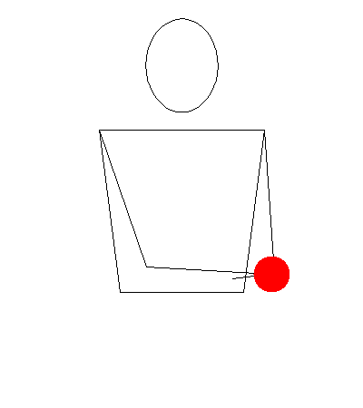
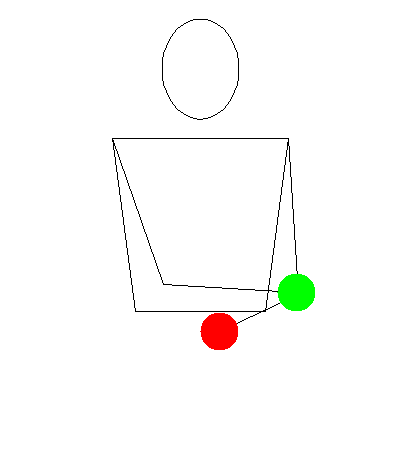

For the purpose of this tutorial, "D" will be used to denote the dominant hand and "N" will be used for the non-dominant hand.
Step 1

Start with one ball in hand D. Have the arms crossed with arm D on top. Throw a simple throw across the body at eye level.
Uncross your arms and then cross again with arm N on top this time. Catch the ball with hand N.
You will need to practice this on both sides.
You'll notice that the ball was on the top hand at both stages. This is important to notice so great job for noticing that.
Step 2

This time, start with one ball in each hand. Arm D is on top. Do step 1, but this time when you uncross your arms, throw from hand N straight up.
Then after you cross your arms again and catch with hand N, catch the vertical ball with hand D.
This also needs to be practiced on both sides.
You've noticed that the top ball stays on top and the bottom ball stays on the bottom. That was really superb of you.
Step 3
Start with 2 in hand D. Perform step 1 and 2, but when it comes time to catch with hand D, you have to throw the ball in your hand first.
This third ball with have to swap between hands and heights. This step is far more challenging than the other two, so going back a step helps.
Tips
Taking this one step at a time is critical. If you do this incorrectly, it can be difficult to correct your bad habit.